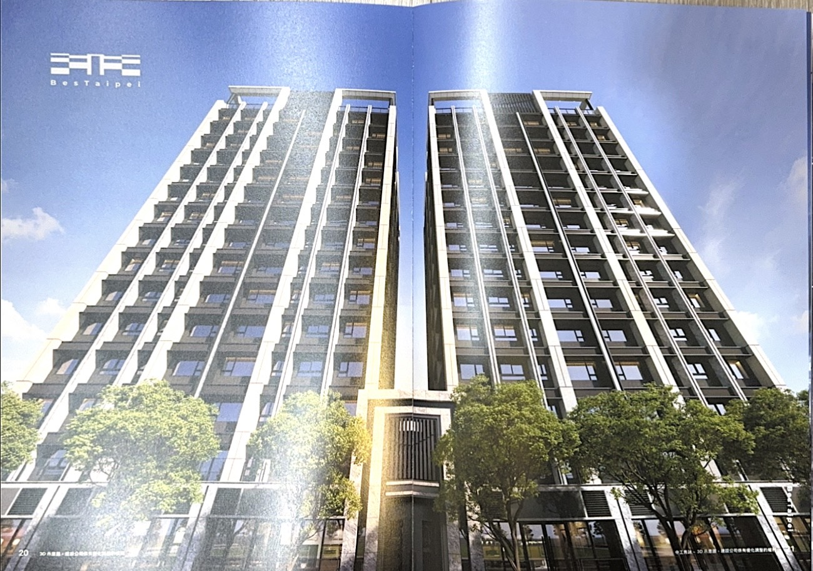

買房 My-Fun Scott賞屋筆記 · 非廣告、不代銷
買房 My-Fun Scott賞屋筆記 my-fun.tw
記錄我實際走訪的建案，用主觀評分＋生活體感整理，不是投資建議，也不是廣告。
北市
新北
桃園
基隆
預售
成屋
最新賞屋心得

台北市 · 南港區 · 三房預售
中工雋詠（BesTaipei）｜南港區三房預售
結構外審、樓高 3.2 米、坪效不錯，但公設走低調實用路線，玄關與陽台機能較簡單。 若你預算在 5–6 千萬、在意室內坪效與建商品牌，這個案子可以列入比較名單。
單價：約 130 萬／坪
總價：約 5–6 千萬
坪數：約 38 坪
公設比：約 31%
我的評分：83 / 100
北市
南港
預售
三房
👉 想看格局、公設、付款方式與完整優缺點，點進去看賞屋全文。